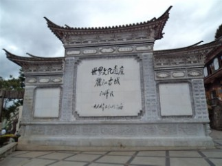
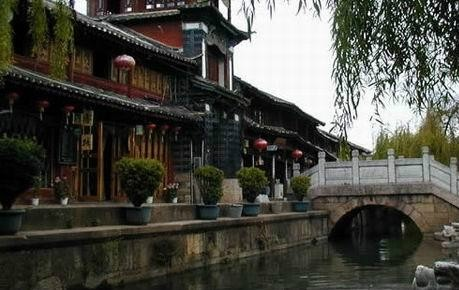
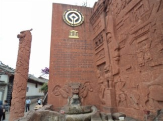
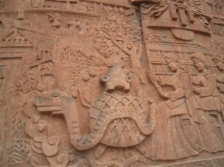
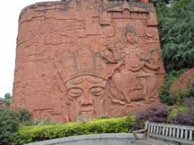
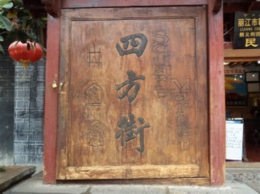

云南之旅10 观看《丽水金沙》
#1 云南之旅10 观看《丽水金沙》 作者：蓝天蓝 发表时间：2011-7-4 8:58:22
云南之旅10 观看《丽水金沙》
时间2011.60.23下午16:40
上午浏览了玉龙雪山，蓝月谷，观看了张艺谋主导的《印象丽江》，吃过午饭又去了玉水寨
玉水寨里面有一条小河，来这里的人都会去里面洗手，一洗 洗财运旺，二洗 洗福气到，三洗 就是洗桃花运了。然后就 去丽江古城了，下午是自由活动时间，离演出还早，我们就浏览了丽江古城
丽江古城历史文化悠久，***还亲自题词了呢


丽江古城小桥流水



丽江的古文化

四方街是丽江古城心脏，交通四通八达，周围小巷通幽，据说是明代木氏土司按其印玺形状而建。这里是茶马古道上最重要的枢纽站。明清以来各方商贾云集，各民族文化在这里交汇生息，是丽江经济文化交流的中心。这里是历代集市中心，每日万头躜动，热闹非常。从四方街四角延伸出四大主街，直通东南西北四郊，又从主街岔出众多街巷，如蛛网交错，往来畅通。街道全用五彩石铺砌，平坦洁净，晴不扬尘，雨不积水。几乎每条街道一侧都伴有潺潺流水。由此形成以四方街为中心，四周店铺客栈环绕，沿街逐层外延的稠密而又开放的格局，古老的集市就这样孕育了城市最初的形状，这与中国传统的四四方方的井字形街道是不是一样的。
#2 Re:云南之旅10 观看《丽水金沙》 作者：掌棋如烟 发表时间：2011-7-4 13:14:34
很喜欢古城小桥流水的风貌
#3 Re:云南之旅10 观看《丽水金沙》 作者：被感动的人 发表时间：2011-7-4 13:25:38
觉得很值~~#4 Re:云南之旅10 观看《丽水金沙》 作者：掌棋宣传员 发表时间：2011-7-4 21:25:01
 都写到10了.好厉害
都写到10了.好厉害